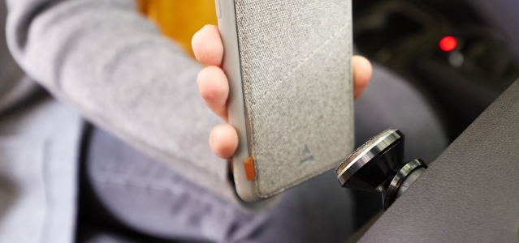
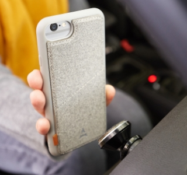

Une coque aimantée
… elle s’aimante directement sur le support de voiture ou le chargeur secteur aimanté de la collection Les Magnétiques (ou autre support compatible).
En savoir plus… elle s’aimante directement sur le support de voiture ou le chargeur secteur aimanté de la collection Les Magnétiques (ou autre support compatible).
En savoir plus… le rabat aimanté de la coque abrite un porte-carte qui permet de ranger une carte de façon discrète et sécurisée.
En savoir plus